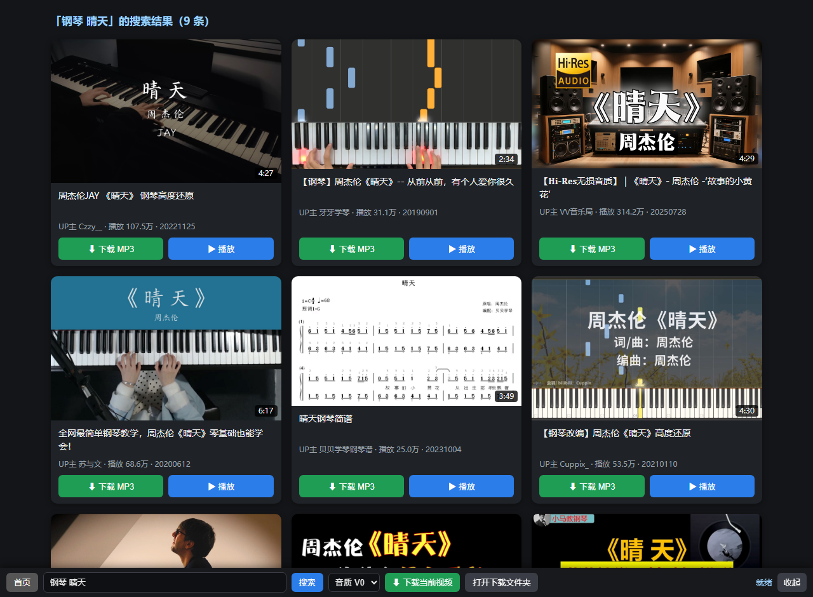

我的工具箱
遇到重复劳动，就写个小工具解决它。做顺手了就开源出来 —— 万一也能帮到你。

主打作品
B 站音乐，一键到手。
一个安静的桌面软件。 在里面搜 B 站视频，卡片上带封面图，点一下就把音频存成 MP3。
都是一句话能说清的小工具，也都是我自己在用的。
视频正常播完后自动点「下一节」。不改观看时长、不跳过视频、不代答题 —— 只是省掉一次点击。
视频中间弹出题目时：闪标题 + 蜂鸣 + 系统通知，把你叫回来。只提醒、不代答，题目永远是你自己做的。
手部不便时的无障碍工具：数字键选选项、空格切换、回车提交。键盘代替鼠标，不替你判断答案。
一键抓取网页上的按钮、目录、视频元素结构，自动复制成诊断报告，方便给脚本适配新改版的页面。
一个喜欢折腾的普通用户。 不爱重复劳动，就把它们一个个写成工具。